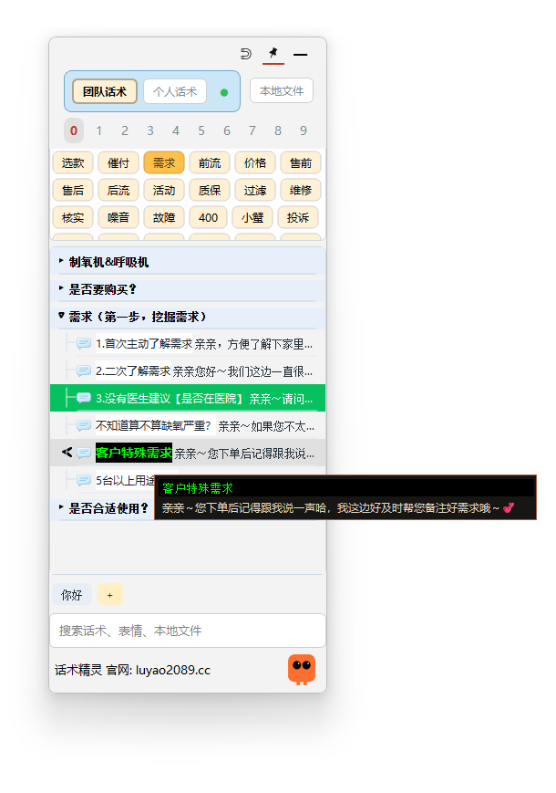

场景化分类
按售前、成交、售后等场景拆分目录，查找路径更短。
电商客服话术工具
把客服团队的话术、售后经验和服务规范整理成知识库，
查找快，发出去更快。
适用于天猫｜京东｜拼多多｜抖音等电商客服团队
按售前、售后等场景分类整理，一次整理长期受用。
话术精灵悬浮在屏幕右侧，不遮挡聊天窗口，随时可查。
双击话术卡片，内容自动粘贴到聊天框并发送，无需复制粘贴。
单击选中，双击发送
下载安装后，话术精灵悬浮在屏幕右侧，不遮挡聊天窗口。话术按场景分类整理，随时展开查找、双击发送。

「话术精灵SoftTalk」本质上是一款客服话术软件 / 客户话术软件， 用来把客服团队常用的话术、售后处理、议价思路和服务规范整理成结构清晰的知识库。
内容按场景、分类、目录组织，老客服负责沉淀，新客服按目录查找， 团队对外口径更容易统一。
知识库内容支持本地按天自动备份，减少手动备份负担。
按售前、成交、售后等场景拆分目录，查找路径更短。
需要时直接定位到对应内容，减少翻聊天记录的时间成本。
团队围绕同一套标准内容服务客户，减少表达偏差。
检测到改动后按天备份到本地，内容更稳妥。
很多客服团队真正难的，不是不会回复，而是经验总散落在聊天记录、 个人脑子和临时交接里。
我想做的，就是把这些零散经验整理成可查、可传、可持续维护的知识库， 让人员变化时，内容不会一起流失。
重点适配天猫、京东、拼多多、抖音等电商客服场景，也适合任何高频客户咨询和团队协作岗位。
可以整理售前咨询、成交跟进、售后处理、安抚表达和服务规范等团队常用内容。
按知识库目录学习和检索即可，不需要先把所有历史聊天记录翻一遍，交接也更直接。
客户端支持本地按天自动备份，并会定期自动清理过期备份文件。你编辑的知识内容会持续留在自己电脑本地。